مستند توضیحی و همراه با پیوست فنی؛ برای ارائه به مدیریت و برای تیم بهرهبردار و پشتیبانی.
ادغام سامانهها پشت یک دروازهٔ ورود و هویت سازمانی، برای کارکنان ارزشمند است؛ اما نظرسنجی ذاتاً مخاطبی دارد که بیرون از حلقهٔ هویت داخلی قرار میگیرد. استقرار مستقل ماژول نظرسنجی—در قالب هاست یا دامنهٔ جدا همسو با خطمشی سازمان—امکان مشارکت فراسازمانی با لینک اختصاصی را فراهم میآورد، در حالی که پنل طراحی و گزارش همچنان در لایهٔ مدیریتشده و با کنترل دسترسی نگهداری میشود؛ از این نظر، تفکیک بستر، هم راهبرد دسترسی و هم حکمرانی امنیتی را روشن میکند.
سامانه برای طراحی فرم نظرسنجی، انتشار از طریق لینک امن، جمعآوری پاسخ و تهیه گزارش در چارچوب سازمانی طراحی شده است. مدیران و ناظران مجاز از پنل مدیریت ساختار سازمان، نظرسنجیها و گزارشها را کنترل میکنند؛ شرکتکنندگان بدون ورود به پنل، در محیط وب پاسخ میدهند.
در بخشهایی از پنل، زمان و تاریخ بهصورت شمسی (جلالی) با تجربهٔ یکدست نمایش داده میشود تا برای کاربران فارسیزبان قابل فهم باشد.
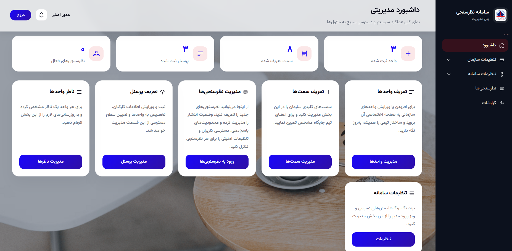
دسترسی کامل به پیکربندی سامانه، گزارشهای امنیتی ورود، و ماژولهای سازمانی و نظرسنجی.
فقط بخشهایی که برایش فعال شدهاند (مثلاً نظرسنجی، یا گزارشات جامع) در منو دیده میشود؛ سایر آیتمها پنهان است.
بسته به سیاست سازمان، انتشار نهایی ممکن است نیاز به تأیید مدیریتی داشته باشد؛ وضعیت هر نظرسنجی در همان صفحه بهروشن نمایش داده میشود.
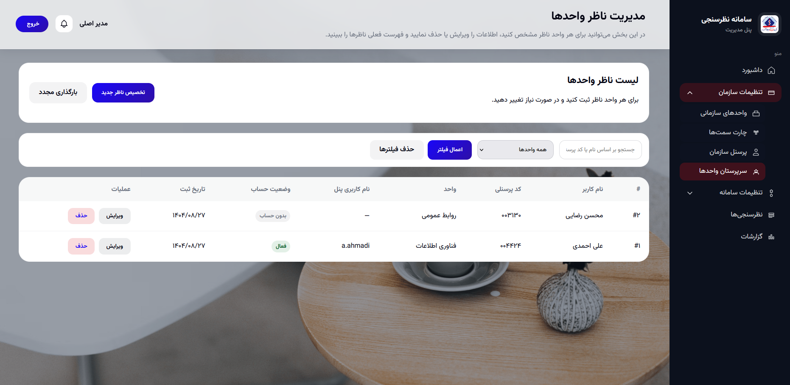
تعریف واحدها برای اتصال پرسنل و سرپرست.
عناوین شغلی قابل استفاده در پرسنل و گزارشها.
ثبت فردی و امکان ورود گروهی از فایل با قالب استاندارد.
تعیین ناظر سازمانی در سطح واحد طبق فرایند شما.
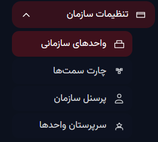
راهنمای گامبهگام در همان صفحهٔ فهرست، بار آموزش برای کاربران تازهکار را کم میکند و با رنگ و فاصلهگذاری هماهنگ پنل، احساس پراکندگی ایجاد نمیکند.
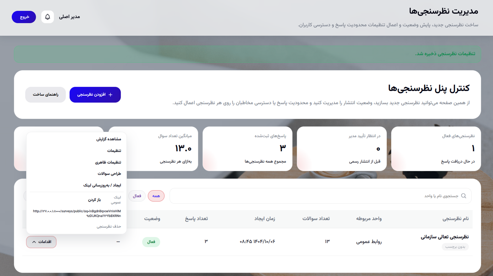
| نوع | کاربرد | یادداشت UX |
|---|---|---|
| متن کوتاه / بلند | پاسخ آزاد | برای نظرات باز؛ در موبایل فیلد چندخطی اسکرولدار راحتتر است. |
| چندگزینهای، چندانتخابی، کشویی | انتخاب از گزینههای از پیش تعریفشده | کشویی برای فهرستهای بلند فضای صفحه را ذخیره میکند. |
| درجهبندی، بله/خیر، مقیاس خطی | سنجش سریع نگرش | برای تحلیل آماری و نمودار مناسب است. |
| عدد، ایمیل، تاریخ، تلفن، وب | اعتبارسنجی ساختاری | خطای ورود پیش از ارسال کاهش مییابد. |
| آپلود فایل | مدارک، تصویر، پیوست | مدیر میتواند حجم و نوع مجاز را محدود کند؛ در گزارش لینک امن دانلود دیده میشود. |
پس از دریافت پاسخ برای یک سوال، ممکن است ویرایش ساختاری همان سوال محدود شود تا یکپارچگی گزارش حفظ شود؛ این پیام در پنل به کاربر نشان داده میشود.
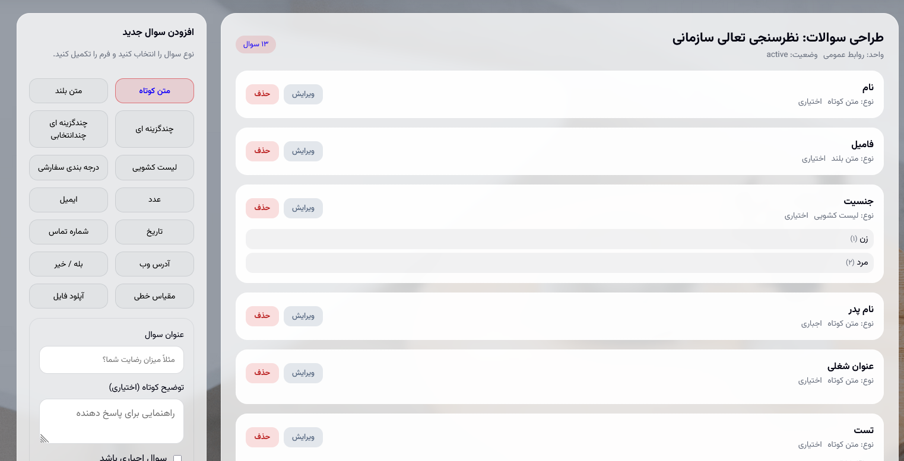
شرکتکننده لینک را باز میکند؛ فرم با فونت و جهت فارسی یکدست، فیدبک بصری برای پیشرفت پرسشنامه، و در صورت طراحی چندمرحلهای، جابهجایی منطقی بین بخشها دارد. برای سوال فایل، مرورگر بهطور استاندارد انتخاب فایل را نشان میدهد و سرور محدودیتهای تعریفشده را اعمال میکند.
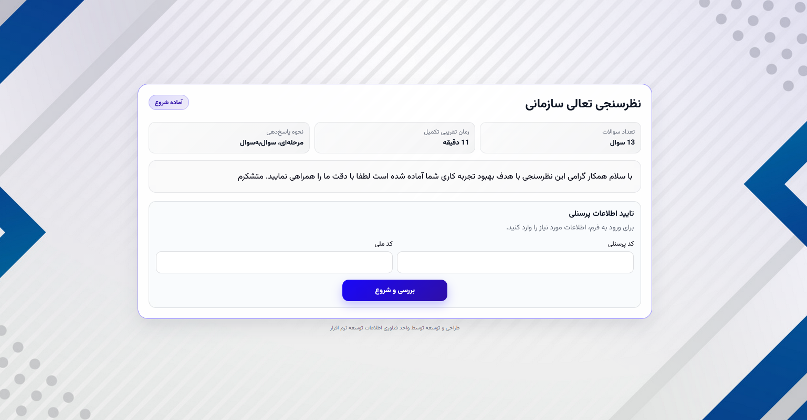
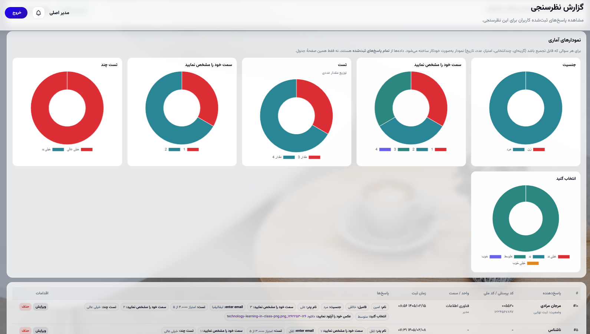
علاوه بر گزارش تکی هر نظرسنجی، دید جامع با شاخصهای تجمیعی و نمودارها در اختیار نقشهایی است که برای آنها فعال شده است. این لایه برای جلسات مدیریتی و مقایسه روند دورهها طراحی شده، نه جایگزین گزارجزئی هر فرم.
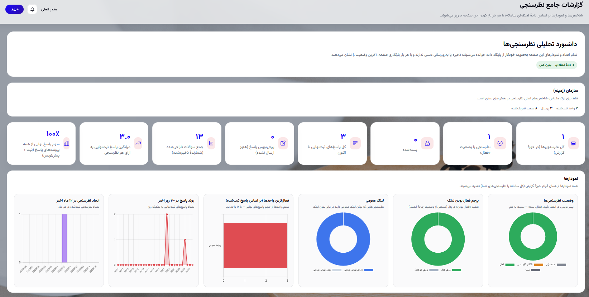
از طریق پنل میتوان نام سامانه، لوگو، رنگهای اصلی، متن فوتر در بخشهای مرتبط، ظاهر صفحه ورود مدیران (عنوان، زیرعنوان، کپچا، پسزمینه، شفافیت کارت)، و پسزمینه سراسری پنل با حالت تصویر ثابت یا تصادفی و گزینهٔ ظاهر شیشهای برای کارتها را پیکربندی کرد.
یکپارچگی بصری بین صفحه ورود، پنل، و فرم عمومی اعتماد کاربر را بالا میبرد؛ محدود کردن شفافیت و لایهٔ تیره روی تصویر، خوانایی متن را حتی روی عکسهای شلوغ حفظ میکند.
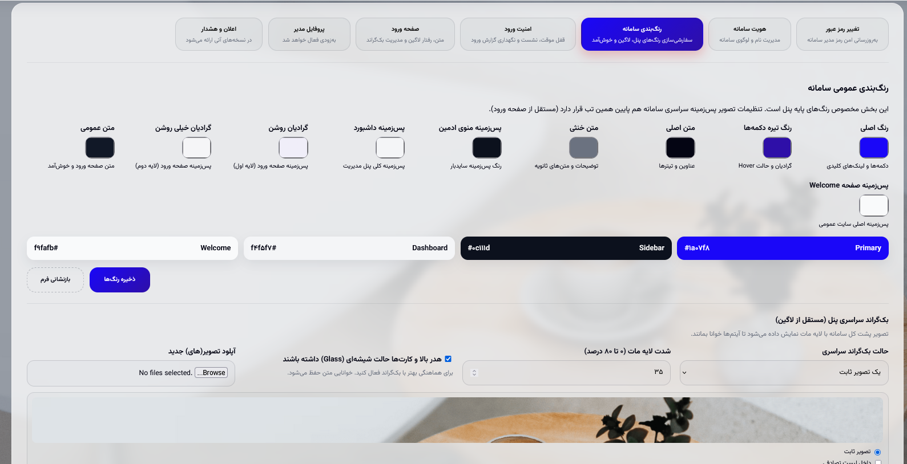
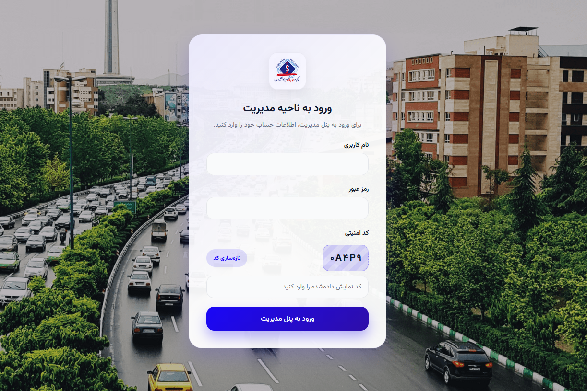
تلاشهای ورود، نتایج موفق و ناموفق، و رویدادهای مرتبط طبق سیاست قابل ثبت و بازبینی هستند. محدودیت تعداد تلاش ناموفق و مدت قفل موقت از طریق تنظیمات قابل کنترل است؛ مدیر مجاز میتواند در همان بخش گزارش، قفل موقت را پس از اطمینان از شرایط، برطرف کند. فیلتر بازهٔ زمانی با تقویم شمسی برای مرور سریع رویدادها در اختیار است.
زمان خروج خودکار پس از سکون طولانی (در صورت فعالسازی در تنظیمات) برای کاهش ریسک جلسه رها شده روی ایستگاه کاری در نظر گرفته شده است.
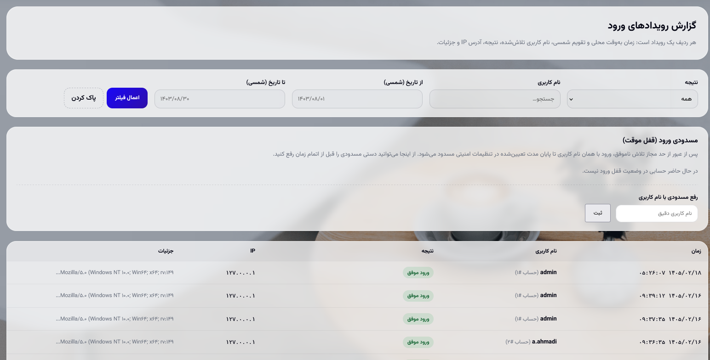
این بخش مکمل بخشهای توضیحی است و برای نصب، عیبیابی و توسعه کاربرد دارد.
| مورد | نسخه / بسته |
|---|---|
| زبان | PHP ۸.۱ به بالا |
| چارچوب | Laravel ۱۲ |
| تقویم جلالی | morilog/jalali |
| خروجی اکسل | phpoffice/phpspreadsheet |
| نام مستعار | کاربرد |
|---|---|
| admin.auth | اطمینان از ورود مدیر به پنل |
| admin.permission | محدود کردن دسترسی ناظر بر اساس کلید مجوز |
| admin.session_idle | خروج پس از سکون طولانی مدت (طبق تنظیمات) |
نسخه دقیق در کد؛ اینجا فقط نقشه کلی است.
| نام | توضیح |
|---|---|
| admin.login | نمایش فرم ورود |
| admin.login.submit | ارسال ورود |
| admin.dashboard | داشبورد |
| admin.settings.* | تنظیمات (رمز، برند، رنگ، امنیت، صفحه ورود، پسزمینه) |
| admin.login-audit.* | گزارش ورود و رفع قفل |
| admin.surveys.* | CRUD نظرسنجی، گزارش، اکسل، ویرایش پاسخ |
| admin.surveys.questions.* | طراحی سوالات |
| admin.reports.index | گزارشات جامع |
| surveys.public.show|draft|submit | نمایش، پیشنویس، ارسال فرم عمومی |
بخشی از پیکربندی (نام برنامه، لوگو، رنگها، امنیت ورود، ظاهر صفحه ورود، پسزمینه پنل و …) در storage/app/app-settings.json با کلاس App\Support\AppSettings خوانده و نوشته میشود.
منطق قفل پس از تلاش ناموفق، ثبت لاگ، هرس دورهای لاگهای قدیمی و نمایش قفلهای جاری در App\Services\AdminLoginSecurityService متمرکز است؛ پارس فیلتر تاریخ شمسی در App\Support\PersianCalendar.
نام جدولها مطابق migrationها؛ برای کوئری و بکآپ.
| حوزه | جداول نمونه |
|---|---|
| مدیریت | admin_users، admin_login_logs، admin_login_throttle_states |
| سازمان | units، positions، personnel، unit_supervisors |
| نظرسنجی | surveys، survey_questions، survey_question_options، survey_responses و جدول پاسخهای تفکیکشده |
فایلهای آپلودشده در ذخیرهسازی Laravel (معمولاً دیسک public) نگهداری میشوند؛ متادیتا در JSON پاسخ ذخیره میشود؛ دانلود از مسیر کنترلشده پنل انجام میشود.
| کلید | عنوان تقریبی در پنل |
|---|---|
| dashboard | داشبورد |
| org.units | واحدها |
| org.positions | سمتها |
| org.personnel | پرسنل |
| org.supervisors | سرپرستان |
| settings | تنظیمات سامانه و گزارش ورود |
| surveys | نظرسنجیها |
| reports | گزارشات جامع |